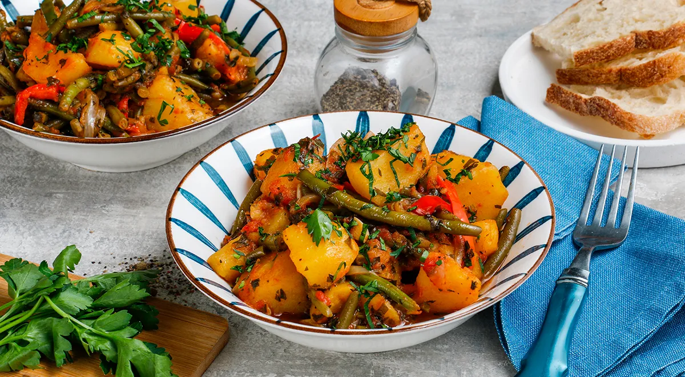

Тушеная картошка с овощами на сковороде

Тушеная картошка с овощами на сковороде — блюдо, которое легко приготовить на даче или дома на скорую руку. Набор овощей может быть разным, но если не учитывать их особенности, то вместо вкусного овощного рагу вы можете получить непрезентабельное месиво. Важно помнить, что все овощи требуют разного времени тепловой обработки. Одни долго остаются твердыми и хрустящими, другие быстро развариваются. При этом большинство овощей хороши в разной степени готовности — с хрустом и без. А вот картошка — ингредиент, который не может оставаться полусырым. Чтобы овощи находились в гармонии с картофелем, не будем гнаться за чрезмерным разнообразием. Кроме лука и помидоров добавим в рецепт стручковую фасоль, которую важно не переварить, и сладкий перец, который этого не боится. И обойдемся без сельдерея, моркови и баклажанов.